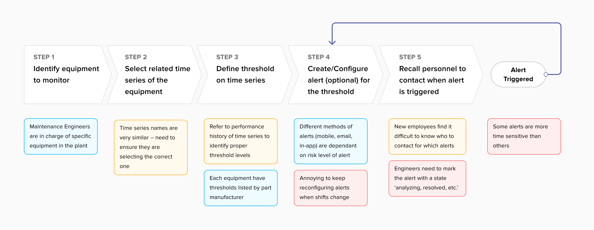
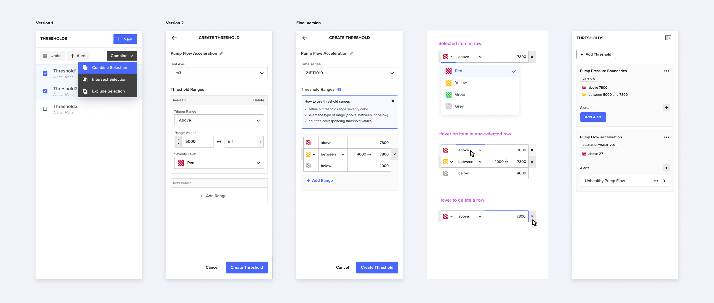
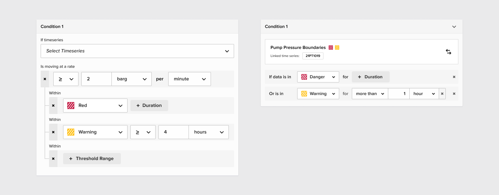
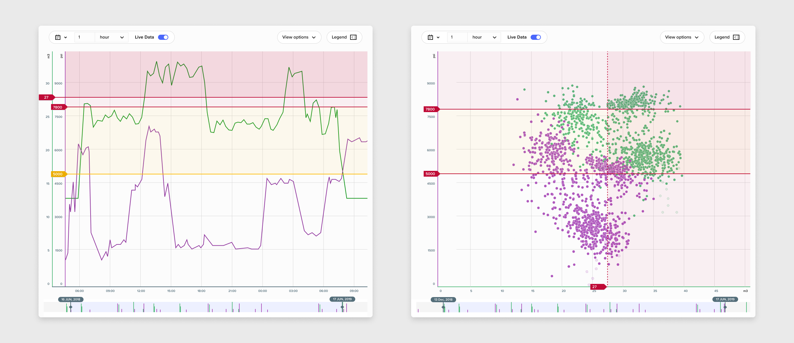

Background
Asset Data Insight (ADI) is Cognite’s Data Platform to stores timeseries data for industrial plants. The timeseries data describes the performance and states of various equipment pieces within a plant. For example, one timeseries may be associated for a component within a pump indicating the pressure over time. ADI has previously focused on analyzing historic timeseries data where the focus was on identifying equipment issues to schedule upcoming maintenance. As ADI moves into the real-time monitoring space alerting functionality is essential.
Process
1. Research
A competitor analysis was conducted to gain knowledge of how other monitoring software create thresholds and alerts (ex. Grafana Dashboards). Furthermore, academic and non-academic HCI research was analyzed on how engineers monitor equipment manually in a control room (i.e. monitoring the pin on a pressure valve). Using thematic coding, descriptive and interpretive codes were generated which were then used to identify key tasks and common pain points.
2. Observation and User Interviews
To get first hand knowledge from our target users, the design team shadowed process engineers onsite at an industrial plant and conducted user interviews. Below lists a few interesting findings:
- When monitoring the exact reading from a sensor is not critical
- Setting up thresholds for a timeseries is non-iterative (generally set up once) whereas alerts are often reconfigured multiple times
- Alerts need to go to different people using different methods during different time periods and days of the week (i.e. day shift vs. night shift workers)

Defining the user journey of a process engineer
3. Iterative Design
Consolidating the research findings and observation data from parts 1 and 2, designs were created to enable process engineers to set up thresholds and alerts. The outcome of this project includes all key functions whereas ‘nice to have’ functionality was deprioritized for following iterations.

Design Options for ‘Creating Thresholds’ action panel

Design Options for ‘Creating Alerts’ action panel
Testing
Following the design phase, the team conducted usability testing with the process engineers we spoke to in the earlier phases of the process and engineers that had no initial insight into the project. A prototype was developed for the purpose of testing which uncovered many aspects of the design iterations that were unclear or too clumsy.

Visualizating thresholds on a line chart vs. a scatterplot
Learnings
Studying engineering at school was extremely beneficial in closing the knowledge gap between myself and our end users, however, there were times where I allowed my academic background to cause an unconscious bias. Although engineering concepts are theoretically the same, I overlooked the differences caused by culture; Norwegian vs. North American. Some mathematical syntax which I initially believed were universal were not used by our Norwegian customers. Therefore testing in this design process was crucial in helping me overcome my bias to design an end product that is appropriate for our Norwegian users.
 courtney
courtney